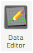
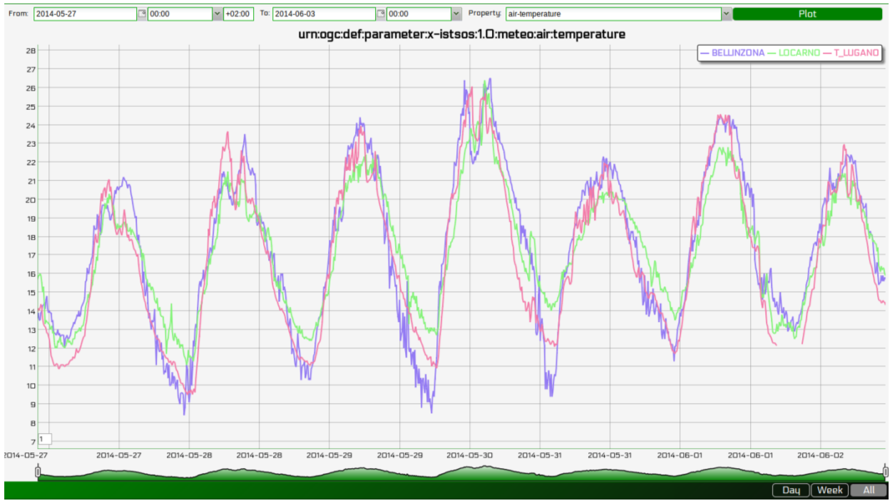

Editing observations¶
The procedure T_LUGANO has some problems: from 2014-06-02T02:40:00 to 2014-06-02T07:20:00 there are no data values:
urn:ogc:def:parameter:x-istsos:1.0:time:iso8601,urn:ogc:def:parameter:x-
istsos:1.0:meteo:air:temperature
[...]
2014-06-02T02:30:00.000000+0200,12.150000
2014-06-02T02:40:00.000000+0200,-999.9
2014-06-02T02:50:00.000000+0200,-999.9
2014-06-02T03:00:00.000000+0200,-999.9
[...]
We can correct them using the Data Editor!
Load the data
From the Web Admin:
Go to Data Viewer
Press the Data Editor button
- Like in the Data Viewer sequentially choose
- the service demo,
- the offering temporary
- and then “Add” BELLINZONA, LOCARNO and T_LUGANO

And:

- On the right panel choose the Property: air-temperature
- Press “Plot”, the last week of measurements is loaded and displayed
Editing with the “Calculator”
On the left panel there is the “Editor” tab:

- In the tab:
Select T_LUGANO from the combo list
The press “Start editing”, the grid is now displayed
- At the bottom-right corner of the chart there are 3 buttons “Day”, “Week” and “All”
- Click on “Day”, the chart is zoomed to contain only one day of data
- Drag the timeline bar on the right where you will see that T_LUGANO has no data

- And:
Click on the chart to select the last observation before the “nodata” hole, a green line is displayed and in the Editing Grid the corresponding row is selected.
- Now go to the Editing Grid panel
- Click the first row where data are NaN,
- Scroll to the last NaN record and holding the SHIFT Key click on it
- The press the “Calculator” button

WIth the Calculator we are able to correct an interval of data in a single action. It is possible to set a numeric value or also use a function using data from the other loaded procedures. Let‟s build a function that make the average of the data from BELLINZONA and LOCARNO and then removes to units:
((BELLINZONA+LOCARNO)/2)-2
Select the quality index. In this case we can choose a QI 500 (manually adjusted).